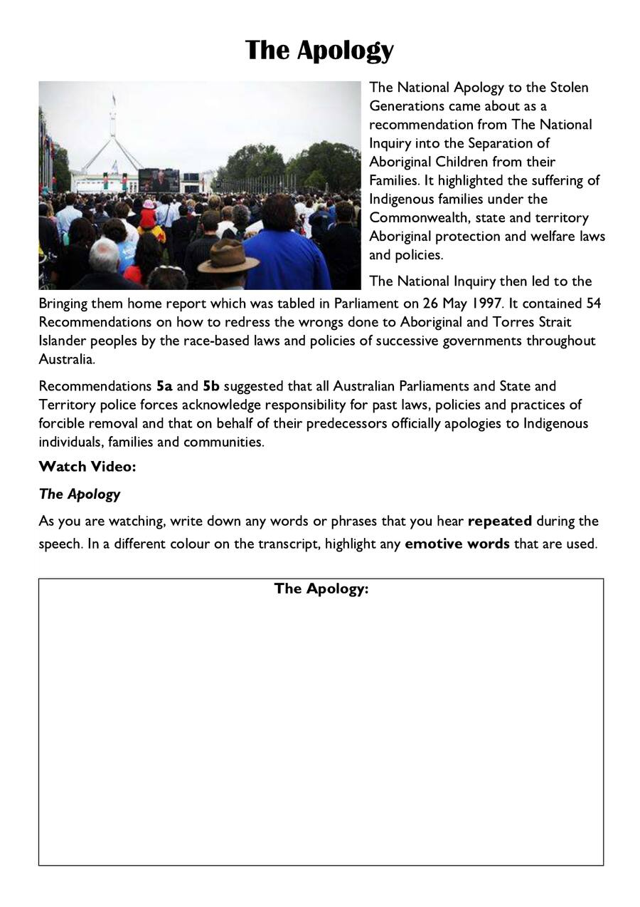
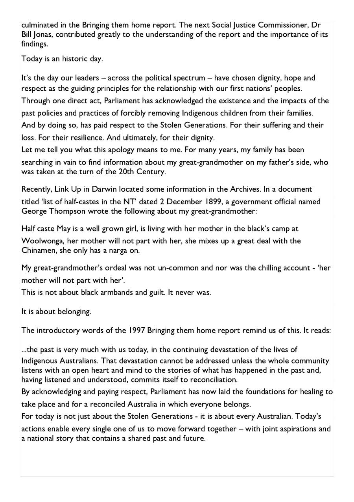
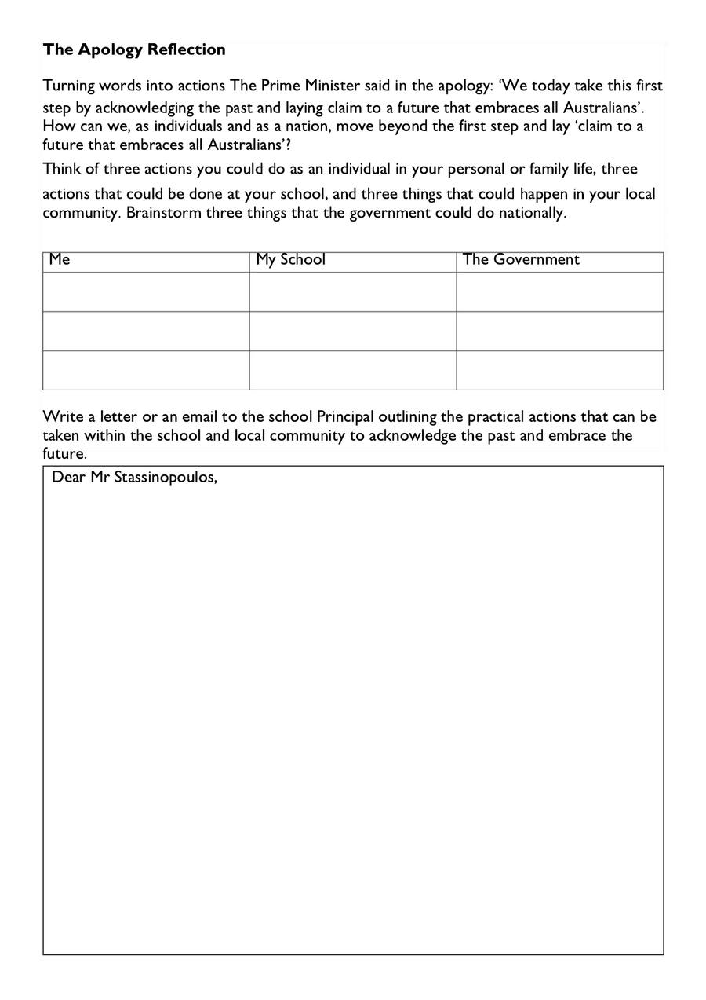
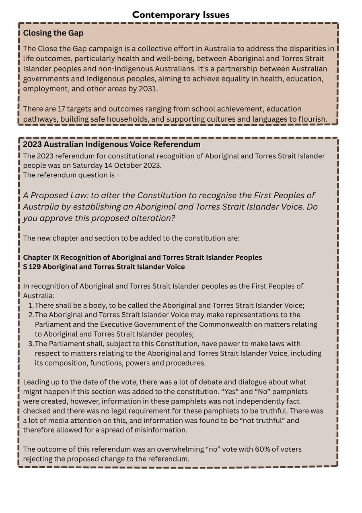
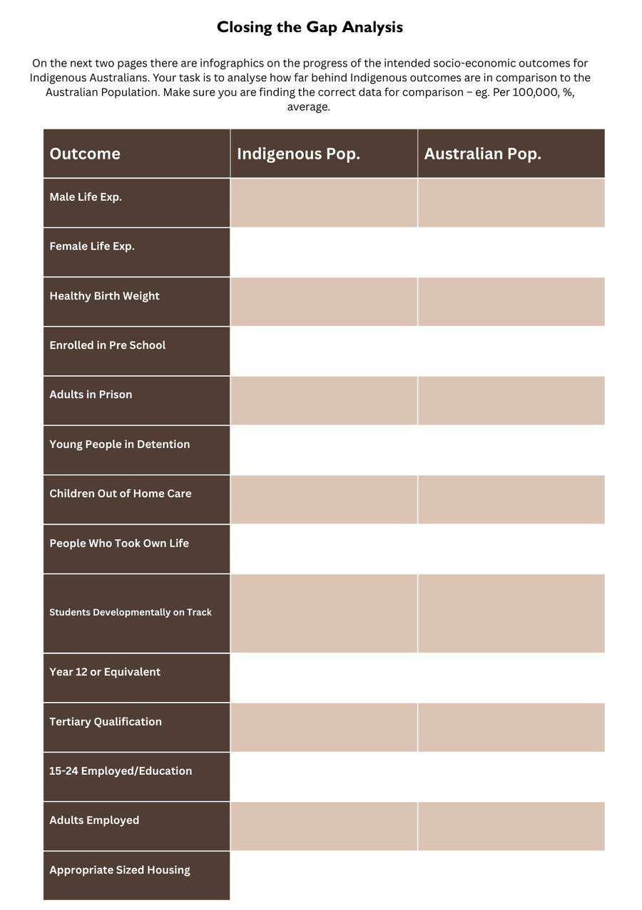
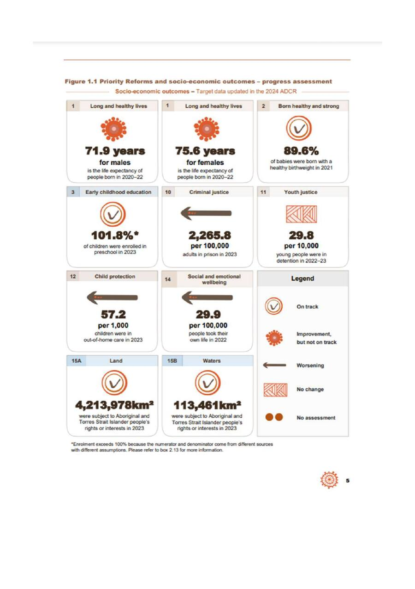
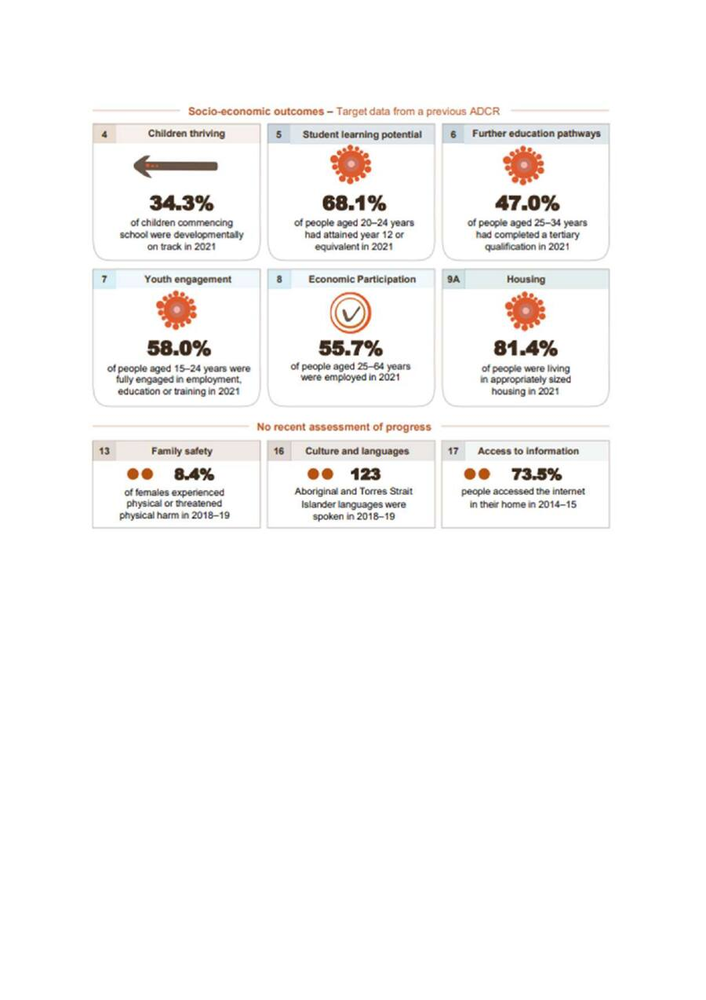

If someone had hurt you deeply and many years later said 'sorry,' what would that mean to you? Would a sorry be enough? What would need to happen after the apology for it to be truly meaningful?
By the end of this lesson I can analyse repetition and emotive language in the National Apology, evaluate whether the Apology has been followed by meaningful action, examine the 2023 Voice Referendum, and assess progress on Closing the Gap targets.
The National Apology to the Stolen Generations

⚠️ As you watch, note any words or phrases that are REPEATED and any particularly emotive words.
The Apology Transcript & Response

The Apology — Repetition & Emotive Language
Turning Words Into Actions

The Apology Reflection
Think of three actions for each column below:
Dear Mr Stassinopoulos,
Contemporary Issues

Closing the Gap Analysis



Closing the Gap Data Table & Questions
| Outcome | Indigenous Population | Australian Population |
|---|---|---|
| Male Life Expectancy | ||
| Female Life Expectancy | ||
| Healthy Birth Weight | ||
| Enrolled in Pre-School | ||
| Adults in Prison (per 100,000) | ||
| Young People in Detention (per 10,000) | ||
| Children Out of Home Care (per 1,000) | ||
| People Who Took Own Life (per 100,000) | ||
| Students Developmentally on Track | ||
| Year 12 or Equivalent | ||
| Tertiary Qualification | ||
| 15-24 Employed/Education | ||
| Adults Employed | ||
| Appropriate Sized Housing |
🪞 Lesson Reflection
🎉 You've Completed the Unit!
Thank you for engaging with this history with care and respect. Download your answers and submit to your teacher.
Finished? Save your answers!
Click below to download your answers as a Word document and submit to your teacher.